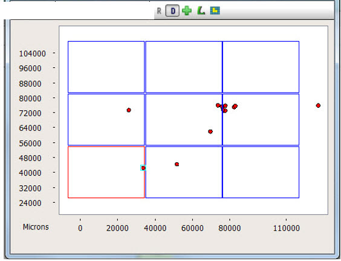

You can overlay
the die cycle or the reticle image (or both) on the Defect Map.
Procedure
- To overlay a die cycle, click
the Overlay Die Cycle button
(the “D” iconTable 1). The same button can be toggled to
remove the overlay. The die cycle is shown as blue colored rectangles
on the Defect Map.
- You can distinguish the defect
die for any defect by left-clicking on any defect.
Results
The defect die is shown in red. Refer
to Figure 2 for details.
Figure 1. Die Cycle in Defect
Map